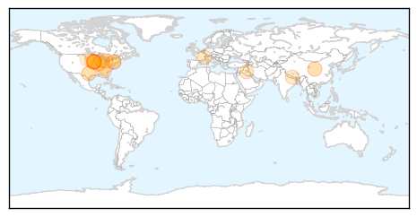
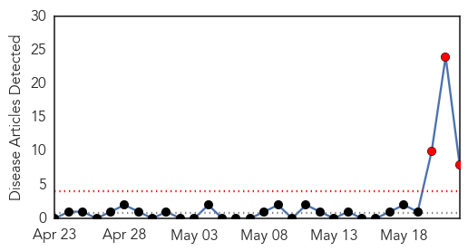

Influenza
30-Day Web Trend
0 alerts, 0 warnings

30-Day Twitter Trend
3 alerts, 0 warnings

Article Locations
Article Confidences

Top Articles:
- 0.994
- How to Keep Your Pet Safe from Canine Flu
- 0.992
- Vaccines developed for H5N1, H7N9 avian influenza strains
- 0.988
- New canine flu detected in several more states
- 0.987
- Dog flu now in 12 states
- 0.777
- Canine flu infecting thousands of dogs in Midwest discovered in Georgia
- 0.751
- May 21, 2015 Archives
- 0.751
- May 21, 2015 Archives
- 0.751
- May 21, 2015 Archives
- 0.751
- May 21, 2015 Archives
- 0.751
- May 21, 2015 Archives
- 0.738
- Avian influenza continues to spread in Iowa
- 0.720
- Case of canine flu confirmed in Macomb County
- 0.720
- Case of canine flu confirmed in Macomb County
- 0.712
- Farmers in the Midwest Are Incinerating Millions of Chickens
- 0.701
- Oxfam training community health volunteers after Nepal Earthquake
- 0.552
- Avian Flu Outbreak Takes Poultry Producers Into Uncharted Territory
- 0.532
- Yankton Press & Dakotan: Community
- 0.524
- Egg prices headed up as bird flu scrambles supply
- 0.503
- Bird flu backlog should be cleared in a week
Top Tweets:
-
No tweets found for May 22, 2015
MERS
30-Day Web Trend
3 alerts, 0 warnings

30-Day Twitter Trend
4 alerts, 0 warnings

Article Locations

Article Confidences

Top Articles:
- 0.998
- 64 isolated, news, Health News, AsiaOne YourHealth
- 0.994
- MERS-CoV fears rising following new cases in South Korea
- 0.993
- South Korea confirms 3 cases of Mideast respiratory virus
- 0.992
- Gulf Daily News Local News Mers outbreak didn't originate in Bahrain say health officials
- 0.987
- Supreme Council of Health Announces 3rd Coronavirus Case in Qatar
- 0.963
- SCH reports a new case of #MERS CoV
- 0.721
- Tourism Bureau seeks to attract Muslim visitors
- 0.599
- Health Ministry accused of procrastination in paying doctors’ fees
Top Tweets:
-
No tweets found for May 22, 2015